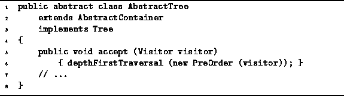

Data Structures and Algorithms
with Object-Oriented Design Patterns in Java
Data Structures and Algorithms
with Object-Oriented Design Patterns in JavaThe AbstractTree class replaces the functionality provided by the single method accept with two different kinds of traversal. Whereas the accept method is allowed to visit the nodes of a tree in any order, the tree traversals visit the nodes in two different, but well-defined orders. Consequently, we have chosen to provide a default implementation of the accept method which does a preorder traversal.
Program  shows the implementation
of the accept method of the AbstractTree class.
This method uses the PreOrder adapter
to pass on a given visitor to the depthFirstTraversal method.
shows the implementation
of the accept method of the AbstractTree class.
This method uses the PreOrder adapter
to pass on a given visitor to the depthFirstTraversal method.

Program: AbstractTree class accept method.
 Copyright © 1998 by Bruno R. Preiss, P.Eng. All rights reserved.
Copyright © 1998 by Bruno R. Preiss, P.Eng. All rights reserved.